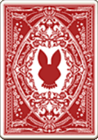
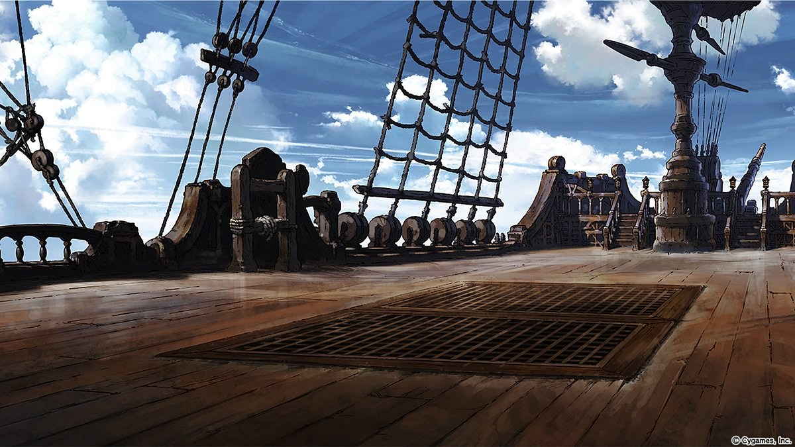
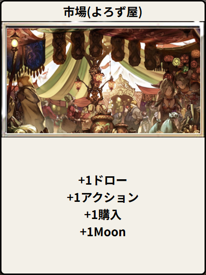
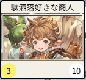
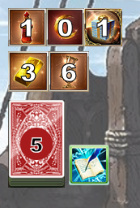
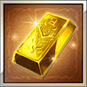
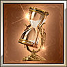
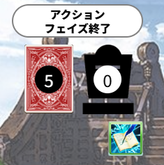

1

0

1

1

0


0

0



あなたの最終得点は
@Butthar_8810 / @Butthar@misskey.io
感想・要望・バグ報告などは上記のTwitterアカウントかmisskey.ioアカウントへなんでもお気軽にお問い合わせください。
DMでもリプでもお好きな方でどうぞ。
「Gura-Nion -グラニオン-」は非公式であり、株式会社Cygamesやホビージャパン、リオグランデゲームズとは一切関係ありません。
当サイトで使用されている情報の所有権および著作権はそれぞれの権利者に帰属します。
 アクションフェイズ
アクションフェイズ
アクションフェイズでは手札から王国カードを1枚だけプレイエリアに出し、使用することができます。
王国カードが使用できない、あるいは王国カードの使用をやめた場合、アクションフェイズは終了となります。

王国カードの効果にて「＋〇アクション」となっている場合は、
指定されているアクション数分追加で王国カードをプレイすることができます。
「＋〇購入」となっている場合は、後述する購入フェイズで可能な「購入」の回数が増えます。
「＋〇Moon」となっている場合は、指定されているMoon数分「Moonポイント」が増えます。
Moonカードをサプライから獲得できるわけではないので、注意してください。
 購入フェイズ
購入フェイズ
購入フェイズでは、サプライのカードを購入することができます。
購入フェイズはさらに「財宝カードの使用」を行う段階と「カードの購入」を行う段階に分かれます。

サプライの各カードには残り枚数があり、ゲーム内ではカードの右下(白丸)に記載されています。 それ以上カードの購入が出来ない、あるいはカードの購入をやめた場合、購入フェイズは終了となります。 残ったコインを次に持ち越したりすることはできません。

ゲーム画面左部分では各ポイントとデッキの残り枚数を表示しています。
：アクションポイント
：Moonポイント
：購入ポイント（残り購入回数）

：勝利点
：ターン数
ゲーム画面右部分では捨て札(左の絵札)と廃棄した札(右の墓場マーク)、ボタン、
そしてメニューボタンを表示しています。
：メニューボタン